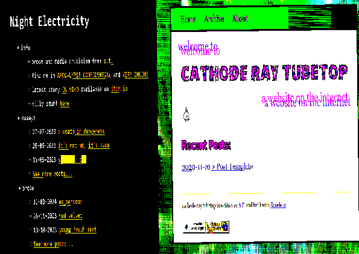

why do you have two websites isn’t that excessive
I have more than two! You can still view the old version of Night Electricity on Neocities, and there are many older worse ones besides. I’ve always liked writing and being a database animal so websites have always been fun for me. The reason I started this one is because there were so many times this year that I wanted to write something longer than a social media post and less formal than an essay, and also I missed the scrappier nature of Zonelets. Any pressure I put on Night Electricity seems entirely self imposed, but it’s also presentationally imposed! But I didn’t want to tear down the site that I gave myself stress migraines over, so here is a little nested one, with the benefit for me that I can edit it all on my desktop, and the benefit to you that I almost know what I’m doing now. So maybe it’s one website? ¯\_(ツ)_/¯

should i make a website
Absolutely! I do not recommend any website builder like Squarespace et al because you are probably not trying to start an MLM, but Zonelets is easier than you'd think! I did pivot to Jekyll to have a static site I could write in markdown (read: make a more accessible site thats easy to update) but Zonelets tutorials are extensive and hosting on Neocities gives you a nice free option. Wordpress is still alright last time I used it but like the Substacks and Mediums of the world it's much more about their consistent branding and formatting than your creativity. Big tech will not save us, any platform birthed from it will inevitably kowtow to bigots in the pursuit of tech libertarianism (hey someone should write about that. twice). And nearlyfreespeech is a great option for cheap hosting, far less evil than the github which I look forward to excising myself from.
what's a cathode ray tubetop
My screen-name on Bluesky, after I uploaded this post and a very cool musician friend of mine said it sounded like a good name. She was right!I'm a person who owns a CRT after taking a tram to a car park and giving a man 30 pounds and then I tried to put it in my bag and it was too big so I ran with it in the rain back to the tram and sat it down next to me like a phosphorescent child an then eventually gave up on the other end and got and Uber and tried to answer no questions. CRT stands for Cathode Ray Tube, Jill in Resident Evil 3 wears a tubetop, this is a silly enough name for a silly project.cathode ray tubetop
— cathode ray tubetop (@nightelectricity.com) November 9, 2024 at 5:39 PM
[image or embed]
what do you think of resident evil 3
I'm so glad you asked! I might like it more than 2 now? It's definitely meaner in a way that appeals after having played all of these games several times (except for the Survivor and Outbreak games, and any of the bad multiplayer ones, and Gaiden? is that the one where the imply leon is a zombie? and it has golf combat? i think that one game in UFO50 thats inspired by Clock Tower is also inspired by that...) and I love the risk reward of using a bunch of resources to down Nemesis for a better gun etc. It has a noticeably terrible localisation but it also gave us DRAIN DEIMOS and DEAD FACTORY so it's impossible to say its bad or not. Both it and 2 have absoloutely incredible backgrounds too, check out how cool it looks!no rest for the wicked
— cathode ray tubetop (@nightelectricity.com) November 14, 2024 at 8:35 PM
[image or embed]